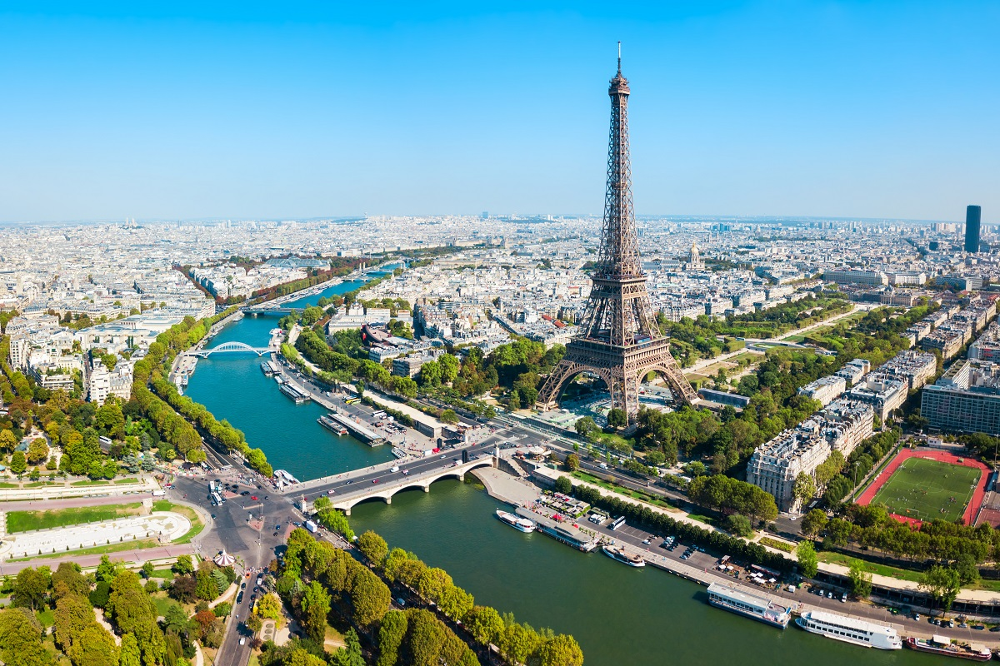

Paris (French pronunciation: [paʁi] (About this soundlisten)) is the capital and most populous city of France, with an area of 105 square kilometres (41 square miles) and an official estimated population of 2,140,526 residents as of 1 January 2019.[1] Since the 17th century, Paris has been one of Europe's major centres of finance, diplomacy, commerce, fashion, science, and the arts. The City of Paris is the centre and seat of government of the Île-de-France, or Paris Region, which has an estimated official 2019 population of 12,213,364, or about 18 percent of the population of France.[1] The Paris Region had a GDP of €709 billion ($808 billion) in 2017.[3] According to the Economist Intelligence Unit Worldwide Cost of Living Survey in 2018, Paris was the second most expensive city in the world, after Singapore, and ahead of Zürich, Hong Kong, Oslo and Geneva.[4] Another source ranked Paris as most expensive, on a par with Singapore and Hong Kong, in 2018.[5] The city is a major railway, highway, and air-transport hub served by two international airports: Paris-Charles de Gaulle (the second busiest airport in Europe) and Paris-Orly.[6][7] Opened in 1900, the city's subway system, the Paris Métro, serves 5.23 million passengers daily,[8] and is the second busiest metro system in Europe after Moscow Metro. Gare du Nord is the 24th busiest railway station in the world, but the first located outside Japan, with 262 million passengers in 2015.[9] Paris is especially known for its museums and architectural landmarks: the Louvre was the most visited art museum in the world in 2018, with 10.2 million visitors.[10][11] The Musée d'Orsay, Musée Marmottan Monet, and Musée de l'Orangerie are noted for their collections of French Impressionist art, the Pompidou Centre Musée National d'Art Moderne has the largest collection of modern and contemporary art in Europe, and the Musée Rodin and Musée Picasso exhibit the works of the two noted Parisians. The historical district along the Seine in the city centre is classified as a UNESCO Heritage Site, and popular landmarks in the city centre include the Cathedral of Notre Dame de Paris and the Gothic royal chapel of Sainte-Chapelle, both on the Île de la Cité; the Eiffel Tower, constructed for the Paris Universal Exposition of 1889; the Grand Palais and Petit Palais, built for the Paris Universal Exposition of 1900; the Arc de Triomphe on the Champs-Élysées, and the Basilica of Sacré-Coeur on the hill of Montmartre. Paris received 24.5 million visitors in 2018, measured by hotel stays, with the largest numbers of foreign visitors coming from the United States, the United Kingdom, Germany and China.[12] It was ranked as the second most visited travel destination in the world in 2018, after Bangkok.[13]